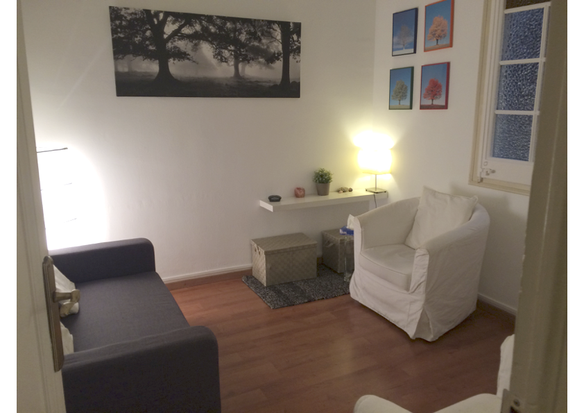

Atenció presencial i online
Atenció psicològica per a infants, adolescents i adults.
Col·legiada núm. 9196 (COPC) | Acreditada per la FEAP i l’EFPA | Membre titular de l'ACPP | Membre de l'AETG

INFANTS
Atenció adreçada a nens i nenes que necessiten ajuda degut a:
i als pares i mares que volen comprendre i ajudar al seu fill o filla.
Aquesta atenció consisteix en:
En què consisteix l'avaluació diagnòstica?
Una avaluació diagnòstica és el coneixement aprofundit de les característiques psicològiques i neuropsicològiques de l’infant i la seva interacció amb el medi familiar i escolar, que permet entendre la situació que ha portat a la família a consultar. Per poder fer una avaluació caldrà fer un procés d’exploració que consistirà en sessions individuals i/o familiars d’entrevista i proves estandarditzades. Després de l’avaluació es decidirà conjuntament si el nen o nena es pot beneficiar d’un tractament psicoterapèutic.
Què és un assessorament a pares?
A l’espai d’assessorament a pares s'acompanya en la tasca parental amb informació i pautes. Hi ha moments difícils com l’etapa perinatal o les crisis de creixement dels fills en què la mare o el pare poden necessitar un suport extra. També després de l’avaluació diagnòstica de l’infant es podrà orientar la família sobre la millor manera de recolzar el seu fill o filla.
Què es fa en una psicoteràpia infantil?
Una psicoteràpia infantil és un procés terapèutic dirigit a un nen o nena que requereix la participació dels pares a través de sessions de pares o sessions familiars. Mitjançant la paraula, el joc i altres recursos expressius es poden explorar les dificultats i crear nous significats que ajudin l’infant a sentir-se millor.
ADOLESCENTS
L'adolescència implica canvis físics, psíquics i socials que requereixen un procés d'elaboració que donarà lloc a una reorganització de la personalitat. Hi ha situacions que poden complicar aquest procés com separacions familiars, migracions, fracàs escolar, conflictes, consum de substàncies, malalties o dols.
Aquesta atenció consisteix en:
Com pot ajudar una avaluació diagnòstica i una psicoteràpia?
La psicoteràpia proporciona un espai segur per explorar experiències i elaborar-les. A l'inici es realitzen unes sessions d'avaluació diagnòstica en què es valora amb l'adolescent i la família quina és la millor ajuda.
En què consisteix un assessorament psicològic o vocacional?
A través de l'autoconeixement d'habilitats, interessos i possibilitats, l'adolescent pot anar prenent decisions sobre estudis i feines que li encaixin millor.
ADULTS
Aquesta atenció consisteix en:
Què és un assessorament psicològic?
És un treball terapèutic puntual orientat a un objectiu definit conjuntament.
Què és una psicoteràpia?
La psicoteràpia és un treball terapèutic que facilita l’exploració de sensacions, emocions i pensaments i afavoreix els canvis necessaris.
Situacions per les quals es busca psicoteràpia:
Teràpia de parella
És aconsellable buscar ajuda quan persisteixen conflictes, distanciament emocional o dificultats de comunicació.
Teràpia familiar
Algunes dificultats individuals estan lligades a les relacions familiars i es treballen amb la participació del grup familiar.
Contacte
BarcelonaC/ Casanova 46, 4rt 1a
Mb: 696 453 277
Email: trescoca@gmail.com Sant Just Desvern
(Consulta privada)
Mb: 696 453 277
Email: trescoca@gmail.com